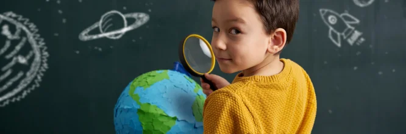
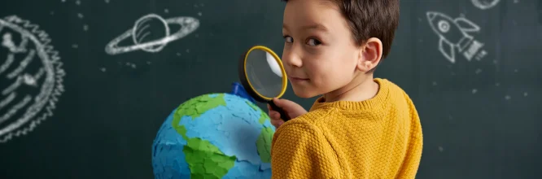

Educación Cívica en Chile
Formación de ciudadanos
¿Qué es?
La Formación Cívica en Chile es una asignatura educativa que busca enseñar a los estudiantes los principios,
normas y valores que sustentan el funcionamiento de la sociedad, con un enfoque en la ciudadanía y la participación democrática.
Esta materia se encuentra en los currículos escolares, especialmente en la enseñanza básica y media, y tiene como objetivo formar ciudadanos conscientes,
informados y responsables de su rol dentro de la sociedad.
Video explicativo
 

¿Para qué sirve la educación cívica?
- Desarrollar la conciencia cívica: La asignatura promueve el conocimiento y la comprensión de los derechos y deberes de los ciudadanos dentro de una sociedad democrática.
A través de ella, los estudiantes aprenden sobre la Constitución, las leyes, y los mecanismos de participación en la política.
- Fomentar la participación democrática: Uno de los principales objetivos de la formación cívica es preparar a los jóvenes para participar de manera activa y responsable en los procesos democráticos,
como elecciones y discusiones públicas.
- Promover el respeto por los derechos humanos: En la educación cívica se enseñan los principios básicos de los derechos humanos, la igualdad, la justicia y la tolerancia,
buscando una cultura de respeto y convivencia pacífica.
- Reforzar la ética y los valores: Se busca inculcar valores éticos que favorezcan el comportamiento ciudadano responsable,
como el respeto por las normas, la honestidad y la solidaridad.
Para más información visite:
Curriculumnacional.cl